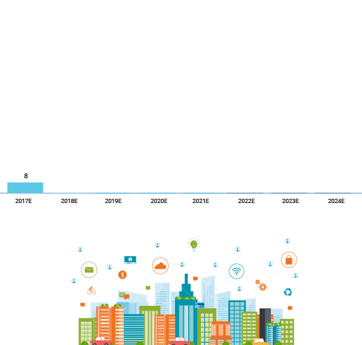
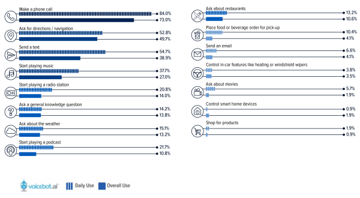
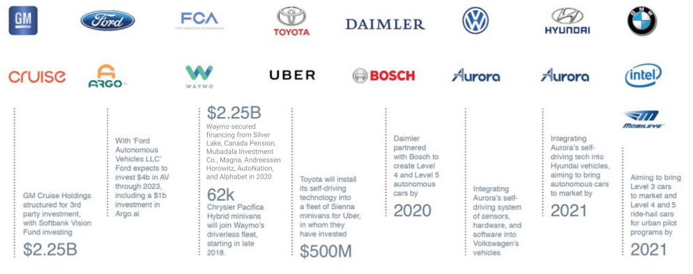
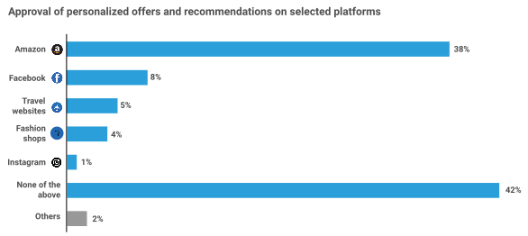

CONNECTED CAR
Envisioning mobility of the future.

PREPARE FOR THE KNOWN,
ANTICIPATE RISK FOR THE UNKNOWN.
Global Automotive
Outlook
UNPRECEDENTED DISRUPTION AND UNCERTAINTY ON GLOBAL PANDEMIC
AFTER COVID-19: UNCERTAIN
US Light Vehicle Sales Outlook
Market is shifting to stability with mild deceleration, mobility dynamics factor in the long term

Pre COVID-19: Recession Risk Contained In The Outlook
Source: IHS Markit
AFTER COVID-19: UNCERTAIN
POLICYMAKERS INTERVENE TO BLUNT ECONOMIC SHOCK

POLICYMAKERS INTERVENE TO BLUNT ECONOMIC SHOCK
UK unveils 12 billion stimulus Germany offers companies 'unlimited' loans Trump declares National State of Emergency to confront coronavirus; Fed slashes rate to 0%
AUTOMOTIVE PRODUCTION LONG TERM TREND
Global Outlook Under Pressure Since 2018
Growth rate udner pressure from 2018, on global trade disputes
Anticipateunprecendented production losses from 2020, on COVID-19, with ongoinguncertainty
Long term pressure on higher vehicle costs due to regulatory mandates, technology disruption, and consumer affordability pressures
Global Production growth rates 2012 to 2030
Source: IHS Markit
ACCELERATING COMPLEXITY: EV, AV, MAAS, TRADE AND COVID-19 RISK
Source: IHS Markit
Market complexity has increased for OEMSs
EV, AV, MaaS, Trade and now COVID-19 impose unprecedented demands on OEM portfolio management and resouce allocation
OEM response is multi-faceted: Portfolio choices - Car vs. Utility, ICE vs. BEV
Bets and Corrections - EV, AV and MaaS
Partnership and Collaboration - PSA - CA, VW-Ford
ACCELERATING OEM COLLABORATION AND CONSOLIDATION
2019 Production by region (million units)

Source: IHS Markit
Market Trends informing our approach
- IOT Automobile As A Node In The ‘Internet Of Things’ - Extending And Enabling Smart City Solutions
- IOT
- IOT
- 5G Acceleration From 2020
- 5G
- EDGE + CLOUD Edge + Cloud: Speed + Power
- AI Intelligent In-Vehicle Voice Assist
- AI
Technology services and products that have been “just round the corner” have arrived, and are now converging:
IoT+ 5G + Edge + Cloud + AI
The whole is greater than the sum of the parts
Individual connectivity technologies (IoT, 5G, Edge, Cloud, Ai) are increasingly integrated and interdependent - amplifying their impact and value proposition
The Democratization of AI
has evolved from high cost, high power deep kearning machines in remote data centres - to compact, low cost, low power AI chips at the edge Ai at the edge
more accessible, faster and more immediately useful AI for consumers and enterprisses (e.g., Voice Assist)
IOT: Automobile As A Node In The ‘Internet Of Things’ - Extending And Enabling Smart City Solutions
Annual Sales of Light Duty Vehicles Built With Wireless Connectivity

The global stock of connected cars is projected to accelerate through 2028, as an increasing number of new models are con nected via Telematics Control Units (TCUs)
Majority of connected vehicles will be in China, Europe and the US will also see significant connected car gains
An additional aftermarket opportunity may exist in enabling connectivity for the estimated over one billion vehicles that are on the road today
IOT: Automobile As A Node In The ‘Internet Of Things’ - Extending And Enabling Smart City Solutions
Connected Cars will integrate with and extend Smart City IoT Infrastructure, including connected sensors and lights, to collect and analyze data and enable unprecedented solutions – for enhanced safety, security, and sustainability
Annual Smart City Investment Global, $ billions
5G: Acceleration From 2020

As internet traffic accelerates globally, mobile providers will transition to 5G, enabling new use cases
Regulators are adopting policies to accelerate the transition to 5G (e.g., FCC 5G FAST plan)
5G: Acceleration From 2020

Key US metro areas will require network upgrades from 2020, while Eu and Asia reach limits from 2024
EDGE + CLOUD: SPEED + POWER

5G will enable high speed, low latency Edge compute – unlocking new use cases
Applications will balance Edge and Cloud compute to achieve optimal performance and cost
Unprecedented connectivity will unleash Big Data, enable AI and amplify Location Based Services - resulting in new technology solutions and helping to drive business model innovation
AI: Intelligent In-Vehicle Voice Assist
As AI proliferates across devices, intelligent in-vehicle voice assist emerges as a key application.
Over half of US adults indicate that they currently use in-vehicle voice assist
Increase of approximately one million new voice assist users per month, from Q4 2018 to Jan 2020
Top sources for in-vehicle voice assist include embedded systems, smartphone via Bluetooth, and Apple CarPlay
By 2028, voice assist is projected to be embedded in nearly 90% of new vehicles sold globally
AI: Intelligent In-Vehicle Voice Assist
In-Car Voice Assistant Use Cases
Source: Voicebot Jan 2020
Top in-vehicle voice assist use cases include calling, texting, navigation and playing music
Daily users of in-vehicle voice assist, most frequently leverage it to place a phone call, send a text, ask for direc- tions and play music
Users utilize in-vehicel voice assist to place a call, ask for directions, text and play music.
Indicated Use Cases may offer a plat- form for developing new business models vehicles sold globally
ONGOING AUTONOMOUS COLLABORATION AND INVESTMENT IS DUE TO BEAR FRUIT
Auto brands, OEMs and technology heavyweights, along with early-stage startups and VCs, ‘continue to collaborate, forming key partnerships and strategic tie-ups
TECHNICAL FEASIBILITY REMAINS A CHALLENGE
FRAGMENTED REGULATIONS AND EMPHASIS ON SAFETY
US
US DOT Secretary Elaine Cho stresses that “Safety is always No. 1 at the US DOT”
Regulations are fragmented, with over 40 states having enacted legislation or signed executive orders regulating the testing and use of autonomous vehicles.
EUROPE
In Germany, laws do not allow autonomous driving when all of the occupants are merely passengers.
The UK’s National Standards Body, BSI published PAS 1881:2020 - Assuring the Safety of Automated Vehicle Trial and Testing’ for automated vehicles (mar 2020)

FRAGMENTED REGULATIONS AND EMPHASIS ON SAFETY

CHINA
Inconsistent traffic regulations nationally, and even basic traffic signs can vary from city to city
Though China presently lags other markers (ranks 20th of 25 countries in a KPMG index measuring autonomous preparedness), the government has set a target for 10% of all new vehicles sold by 2030 to be fully autonomous
BUSINESS VIABILITY AND CONSUMER INTEREST ARE UNCERTAIN

Autonomous Business Viability Is Uncertain
“With regard to full autonomy, we switched the priority in terms of deployment of technology and moved trucks ahead of cars...this is the area (commercial truck), in a hub to hub case, where we think that the business case is most attractive, first.” -Ola Kallenius, Daimler chair and head of Mercedes cars
With L2+ cost presently at over $5K, consumer interest appears tepid, even among premium buyers:
Cadillac Super Cruise was introduced in 2017, but was not offered on subsequent new models (though proliferation is planned from 2020)
Take rate for the highly buzzed Full Self Driving feature, amnng Tesla buyers, is relatively muted at 30-40%
BUSINESS VIABILITY AND CONSUMER INTEREST ARE UNCERTAIN
INITIAL CONSUMER INTEREST APPEARS LIMITED
In a recent poll of 2,586 people, majority of respondents indicated that they would not be willing to purchase a self-driving car, primarily due to concerns with feelings of safety (methodology)
The percentage of respondent that indicated that they would feel safe as “a pedestrian in the area of a self-driving car” was lower
INITIAL ROBOTAXI DEPLOYMENTS ARE LIMITED

Daimler Partners With Bosch On Robotaxi Service
Launched in San Jose, California, in December 2019
Only open to employees currently
Geo-fenced, with fixed pick-up and drop-off points in San Jose; no timeline for expansion
Safety driver monitors from the left front seat while a technician captures data in the front right seat
Indications that the pilot will be short-lived, on comments from Daimler chair Ola Kallenius, signaling a pivot away from autonomous cars to autonomous commercial trucks
INITIAL ROBOTAXI DEPLOYMENTS ARE LIMITED
Waymo Launches Fully Driverless Arizona Robotaxi Pilot
Initial Consumer Interest Appears Limited
Launched in 2019; limited to a 50 square mile service area
Driving permitted at night, but not in rain or dust storms
Waymo employees monitor the vehicle remotely, via eight cameras, and can intervene in ambiguous situations
Riders are vetted, with signed nondisclosure agreements
Initial rider feedback indicates 70% five star rating
Future ‘rider-only’ deployments expected in limited, well-mapped city areas
As even the most advanced autonomous technology is occasionally confounded, experts project that scaled roll-out is 10+ years away

- Shared Mobility As A Service (MAAS)
- Shared Mobility As A Service (MAAS)
- Shared Mobility As A Service (MAAS)
- Shared Mobility As A Service (MAAS)
FRAGMENTED REGULATIONS AND EMPHASIS ON SAFETY

As the search for viable MAAS opportunities continues, players have discovered limited profit opportunities, resulting in unexpected exits and closures…
GLOBAL EMISSIONS TARGETS DRIVE OEMS TOWARDS EVS
Global Electric Vehicle Volume
As vehicle CO2 emissions targets become more aggressive globally, OEMs will push EV sales to meet regulatory mandates
GLOBAL EMISSIONS TARGETS DRIVE OEMS TOWARDS EVS

EU CO2 Emissions Targets
Emissions from new vehicles registered in the EU must be 15% lower by 2025, and 30% lower by 2030, versus 2021
The trend towards increasingly aggressive emis- sions targets is also evident in the US and China
Crashing oil prices, economic pressure and US political dynamics may curtail the transition in the near term
Source: www.ft.com & EPA Rules 2020
GLOBAL EMISSIONS TARGETS DRIVE OEMS TOWARDS EVS
In the Near Term, the COVID-19 related oil price crash and lower emissions standards may slow the transition to EVs
"Oil price plunge sends tremors through battered global markets"
GLOBAL ELECTRIC VEHICLE SALES: SMALL BUT GROWING
Global EV Sales are small but growing - increasing from 1.284 million units in 2017 to 2.14 million units in 2019
GLOBAL ELECTRIC VEHICLE SALES: SMALL BUT GROWING
Concurrently, global ICE (internal combustion engine) sales have fallen - dropping to 56.52 million units in 2019
Net effect is EV share growth to 3.6% of Global Auto Industry in 2019
Ongoing share growth is anticipated on regulatory mandates and proliferation of charging infrastructure
NEW PLAYERS EMERGE, AS THE INDUSTRY DRIVES FOR EV TECHNOLOGY BREAK-THROUGHS
BIG DATA IS ON THE CUSP OF EXPONENTIAL GROWTH, OFFERING NRW MONETIZATION OPPORTUNITIES - IN CONCERT WITH CASE TRENDS
Exponential Growth is Projected In Big Data, From 2025
Big Data Growth is projected, on mutually reinforcing synergies with CASF trends - offering potential for new data monetizatio opportuniities
BIG DATA IS ON THE CUSP OF EXPONENTIAL GROWTH, OFFERING NRW MONETIZATION OPPORTUNITIES - IN CONCERT WITH CASE TRENDS
Consumer Arc Willing To Share Personal Data to Receive Tailored Ads

Consumers Place High Vale on eCommerce Purchase Recommendations
CONNECTED CARS WILL ENABLE NEW BUSINESS MODELS: LBS, UBI, OTA
Substantial growth is projected in location-based (LBS) services:
Valued at $36.2B in 2019 and expected to reach $126.4 B by 2025
CAGR of 23% from 2020-205
Usage Based Insurance (UBI) services:
The global usage-based auto insurance market is expected to hit over $190B by 2025
CONNECTED CARS WILL ENABLE NEW BUSINESS MODELS: LBS, UBI, OTA
Over The Air (OTA) growth is expected to facilitate in-app purchases and OTA fixes across devices, including cars...enabling new revenue streams
Sources: Motor Intelligence LLP, March 2020; statistica-trendcompass 2020 https://www.paymentscardsandmobiles.com; theneura.com
PRIVACY IS A GLOBAL CONCERN
Consumer concern about on-time privacy is evident, globally:
On average, 83% of global consumers are concerned about on-line privacy
However, the majority of consumers is willing to accept some privacy risk to secure personal benefits

BLOCKCHAIN MAY OFFER A PATH TOWARDS ENHANCED SECURITY

Blockchain Funding Remained Strong Through 2019
REGULATORY COMPLIANCE MUST BE ASSURED
Consumer Privacy & Data Protection are paramount in the Era Of Connected Car
Rising monetization and data collection is driving regulatory scrutiny across every domain, including automotive, which is increasingly connected and data dependent